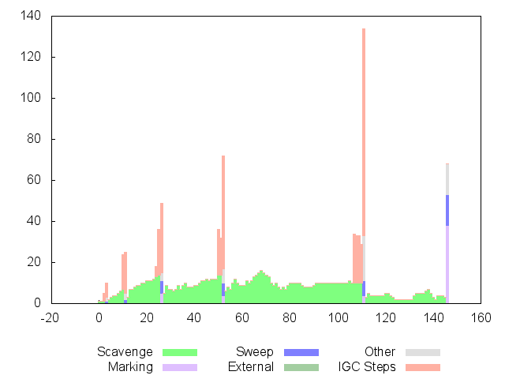

| Phase | Count | Time (ms) | Max | Avg |
| Total in GC | 147 | 1255 | 68 | 8 [dev 6.403124] |
| Scavenge | 141 | 1114 | 16 | 7 [dev 3.605551] |
| MarkSweep | 6 | 141 | 68 | 23 [dev 24.269322] |
| Mark | 4 | 51 | 38 | 12 [dev 16.852300] |
| Sweep | 6 | 37 | 15 | 6 [dev 4.898979] |
| External | 0 | 0 | 0 | 0 [dev 0.000000] |
GC TOTAL Throughput (after): 17.4 GB / 1255 ms = 14.2 MB/ms
GC TOTAL Throughput (before): 19.5 GB / 1255 ms = 15.9 MB/ms
GC MS Throughput (after): 267.8 MB / 141 ms = 1.9 MB/ms
GC MS Throughput (before): 757.5 MB / 141 ms = 5.4 MB/ms
GC OLDSPACE Throughput (after): 267.8 MB / 141 ms = 1.9 MB/ms
GC OLDSPACE Throughput (before): 757.5 MB / 141 ms = 5.4 MB/ms
